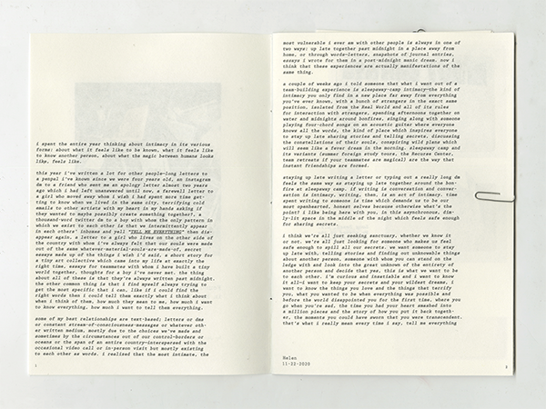
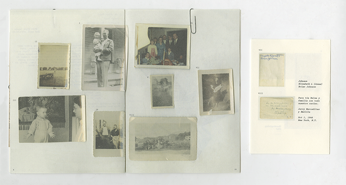
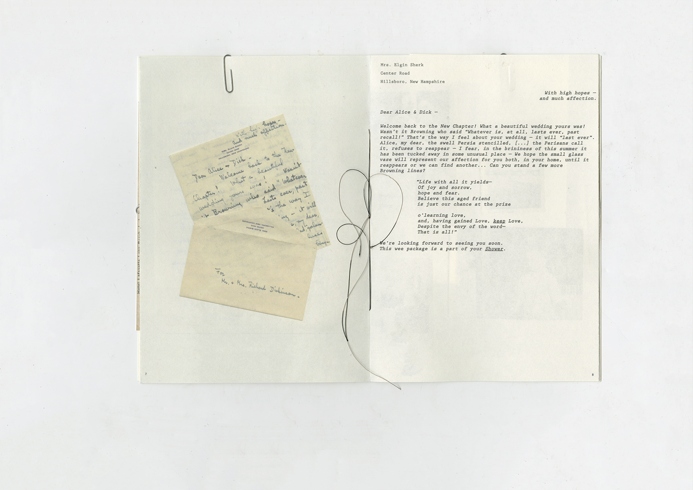
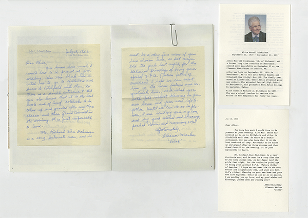
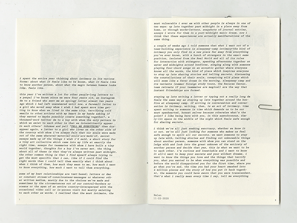
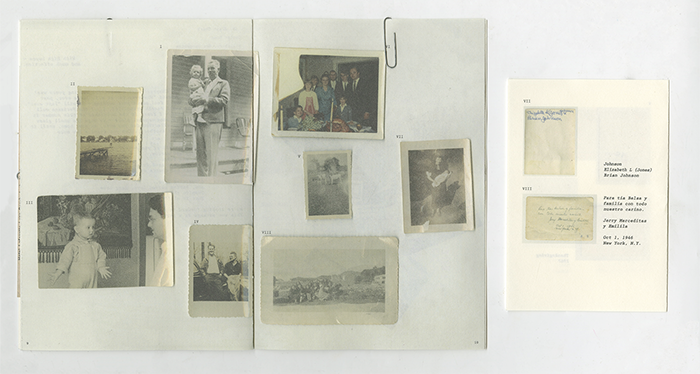
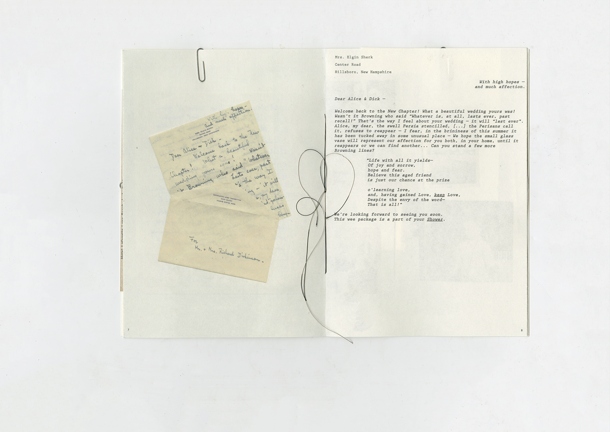
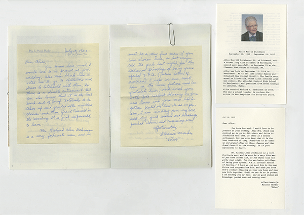

Found Homes in New York,
Saddle Stitched Book,
2024
Saddle Stitched Book,
2024
Found Homes in New York explores letters, postcards, and photographs found at thrift stores and flea markets. I wanted to rediscover the lives of these people, including inserts that use external sources to provide information on the people and transcribe the letters.
 






